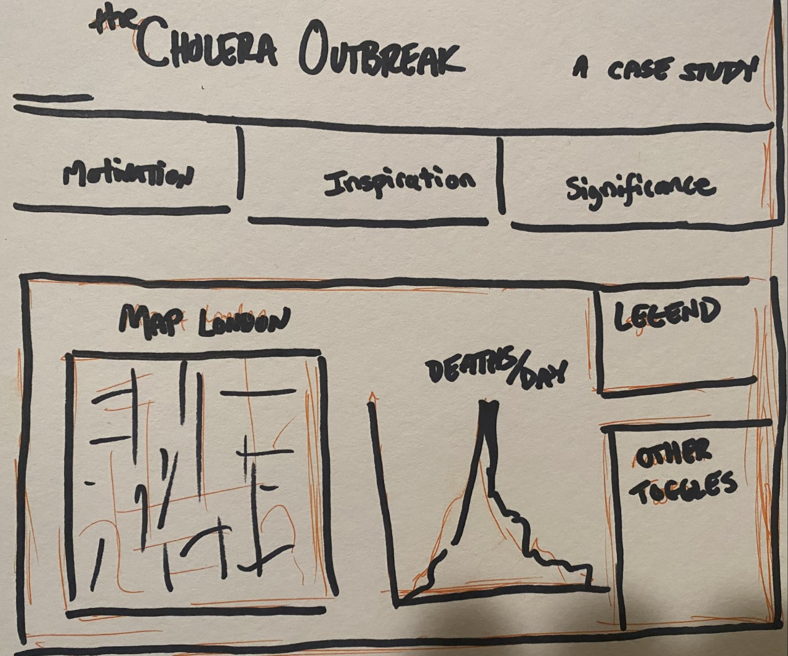

I had a difficult time with the technical side of things that slowed me down a frustrating amount. I am an HCI student and this is my first course in programming so that is to be expected. That said, I do want to note I am very excited about the skills this project (and our following project) are providing me. It is apparent that not all the skills have come to fruition, but I intend for that to be temporary.
My first misunderstanding came with running the server correctly on my computer to hold my active data. It was not clear to me that I was to be using the console through my computer to run Python. Once this was clear I was able to load the data in my console but could not get d3 to interact with my data. Eventually it seemed the problem cleared up without a solid understanding of why I was dealing with this particular obstacle. Nonetheless, this was a problem I dealt with for far too long. I also had some problems with the streets.json file that I eventually got taken care of but suspended my process even further I should have come to ask for help from Dr. Reda or the TA's sooner. So, expect to see me in office hours.
I initially had a grand design. To put this visualization in context I was going to provide additional information concerning (my) Motivation, Inspiration (i.e. John Snow), and Significance (both for epidemiology and data visualization) at the click of a button. I have a space for additional functionality where I planned to include interacting gender and location toggles. I was going to create a toggle to fill up the Map of London with a uniform and randomly placed populace of dots to represent individuals who did not contract Cholera. The explanation for the additional dots would be offered through a note reminding the viewer of the waste disposal methods of the time and I would have likely chosen an opaque brown to represent the rest of the populace.

This project initially seemed very rigid in what you might expect in terms of visualizations. Maybe I felt the data itself to be somewhat dry, or devoid of additional interpretation, but my stance has since shifted. In providing a narrative or entering this data onto a blank canvas (html page) one begins to realize how much context plays a role in data interpretation. I mentioned above my unfulfilled intention to use brown dots to represent potential cholera-free agents to make an analogy to the accumulation of waste in the streets. This connection would not make sense without context - i.e. a focus on the accumulation of waste as a catalyst to the epidemic.
It would make sense if my audience could verify which pump was closest to the location of each death. We can see it is the obvious choice for many, but for many others the pump was maybe second or third if we were to rank the pumps by distance. Perhaps if I knew for one of these deaths that the 'Cholera' pump was only 20% further, it might be reasonable for the individual to occasionally use the 'Cholera' pump. Of course, a more detailed map would be higher on my priority list, so the previous intention is far from tangible.
I was confused with this as I initially saw no way to connect the two csv files (deathdays.csv and deaths_age_sex.csv) I did not see any dates attached to the deaths in the deaths_age_sex.csv file which made me feel initially justified in assuming there was no connection. I looked at the assignment description again and saw the qualifier 'in order' which I assume the reference of their chronological order? I did eventually realize this, but I might suggest providing more emphasis on this implication in the future.